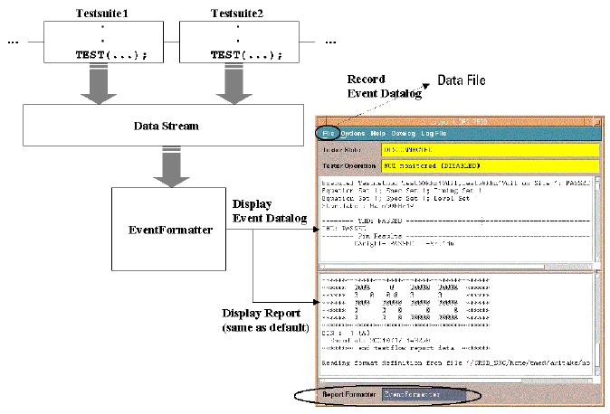

Logging Data
A testmethod-based testsuite performs the event data logging at the execution of the TEST and PUT_DATALOG API. The event data logging is the new data logging system for the SmarTest.
In the default settings of the SmarTest, the event data logging is disabled. To enable the event data logging, set the log_events_enable system flag to "on", set either output_on_pass or output_on_fail testsuite flag to "on". When the event data logging is enabled, data is logged to the data log stream which holds the output of the TEST or PUT_DATALOG API as in the figure below.
Further, you should set the report formatter to the "EventFormatter" which retrieves the event record in the data log stream and display the formatted data in the report window. See Selecting the EventFormatter.

The PUT_DATALOG API also outputs array data to the data log stream. The target array data such as an analog waveform data with captions that is held in the class object created by the WAVE_LOG API at the certain condition.